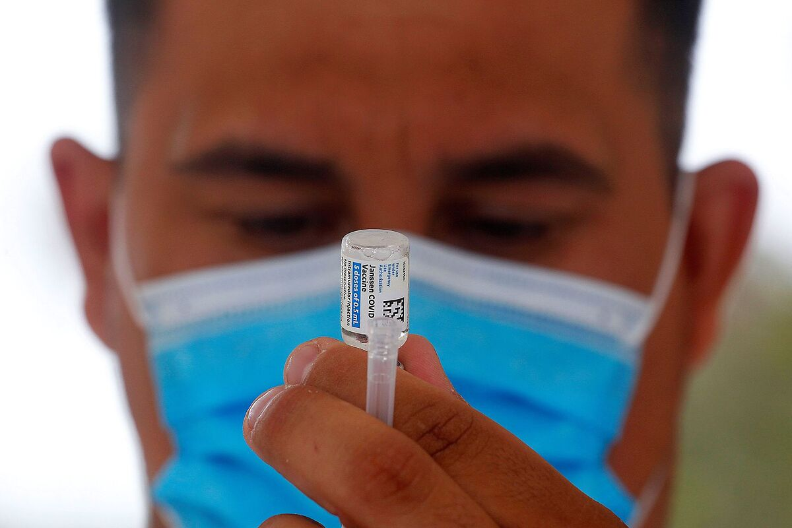
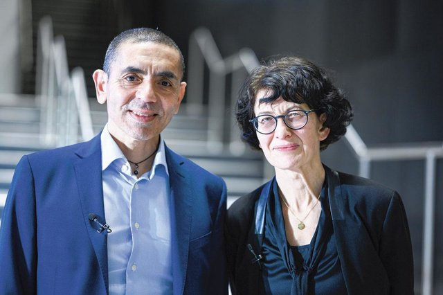
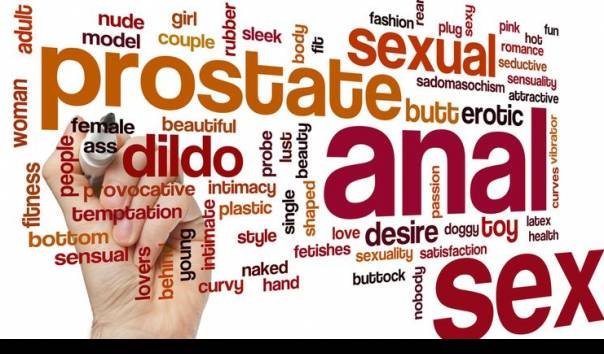
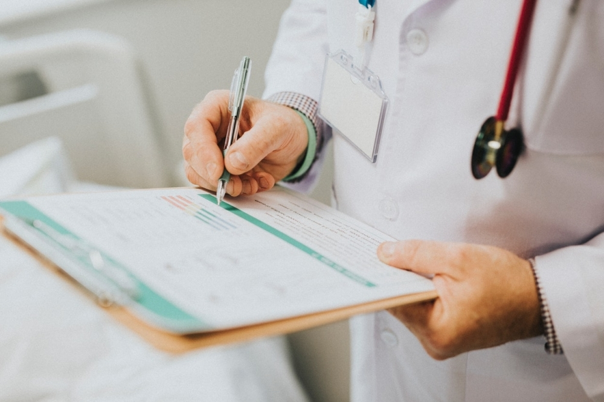
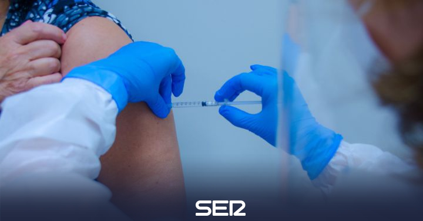

Las vacunas Pfizer y Moderna no causan infertilidad masculina

Las vacunas Pfizer y Moderna no tienen un impacto negativo en la fertilidad de los hombres, según un estudio publicado en JAMA.No existe evidencia real o teórica de que la vacuna contra esta enfermedad cause infertilidad.
'Somos los primeros interesados en examinar si existe algún impacto de la vacuna covid-19 sobre el potencial de fertilidad masculina, y no lo encontramos', dijo Ranjith Ramasamy, jefe del estudio realizado por la Universidad de Miami y publicado hoy..después de demostrar en un ensayo clínico que no produjeron efectos reproductivos adversos en los participantes masculinos que recibieron la vacuna.
Ramasamy, profesor y director del Programa de Urología Reproductiva de la Facultad de Medicina Miller de la UM, explicó en una reunión virtual que su equipo de la Escuela Miller examinó a un grupo de 45 voluntarios varones sanos de entre 18 y 35 años y evaluaron la parámetros de los espermatozoides antes y después de vacunarlos, informa Efe.'Ninguno de los participantes del estudio mostró una disminución en los parámetros de los espermatozoides', concluye el autor principal del informe.Es algo que se descarta con este estudio.Ramasamy señaló.
El estudio, que concluyó el 24 de abril, se realizó entre el 17 de diciembre y el 12 de enero, y la edad promedio de los 45 voluntarios participantes fue de 28 años.
Los voluntarios, que no tenían problemas de fertilidad al comienzo del estudio, proporcionaron una muestra de semen antes de recibir la primera dosis de la vacuna Pfizer o Moderna y dieron otra muestra unos 70 días después de la segunda dosis.
'Este es el ciclo de vida completo de los espermatozoides y 70 días es tiempo suficiente para ver si la vacuna afecta los parámetros del semen', explicó Daniel C. González, alumno de la citada facultad y uno de los participantes en la preparación de la estudio .
'Medimos el volumen de semen, la concentración de espermatozoides y el recuento total de espermatozoides en movimiento y descubrimos que no hubo disminuciones en ninguno de los parámetros en comparación con el análisis de referencia', dijo González.
El estudio del equipo de Ramasamy muestra que no hay evidencia alguna, ni real ni teórica, que la vacuna causa infertilidad.Además, estos hallazgos científicos servirán para acabar 'con la renuencia a la vacunación (…), una barrera para poner fin a la pandemia del covid-19.
JAMA: doi: 10.1001 / jama.2021.9976

Posted On: 2021-06-18T00:00:00



Content Date: 2021-06-18
Download Date: 2021-09-16
Document ID: L0C04G7EM